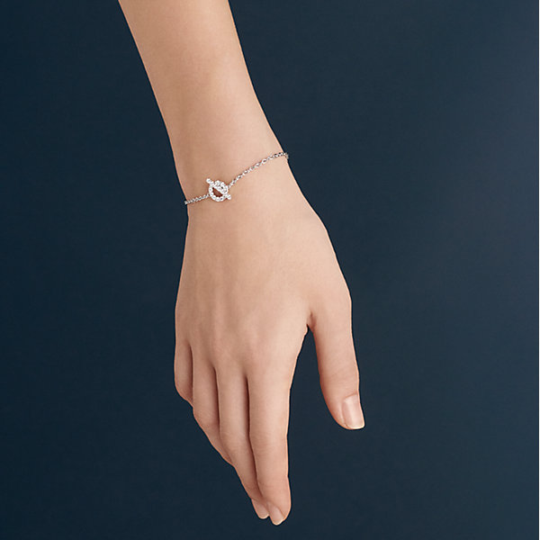

Accessories
A fashion accessory is a secondary supplementary to a user's clothing which is usually used to complete
a garment and completes the look of the user.
One of the things we notice about fashionable women is not just their clothes which look great,
but their clothes are always punctuated with great accessories.
There is often a great style in the details.
Like the fashion itself, the shapes, silhouettes, and colors of the accessories also change over time.
In general, it is hard to find cool new looks but a trendy bag or catwalk style necklace
can be combined with older clothes to create new clothes. Investing on some fun, new,
fashionable accessories that can update your wardrobe throughout the season even it
is not in accordance with the current fashion trends.Clothes can create the majority
of clothes but accessories are more important than you think. Accessories and clothes are
equally important in your outfit, working together to create a harmony that expresses your
style and who you are.
Bags
Accessories give more importance to your personal style, taste, and preferences.
They also offer unlimited opportunities for clothes, helping you to do the best of each item you have.
Clothes take up more space physically in your closet and clothes,
but accessories are important details to complete each appearance.
By itself, a bag, scarf or headband may not have much effect. However,
when combined with clothes the accessories help create a robust outfit.
Accessories are as important as clothing, offering a whole new opportunity to express yourself.
With accessories, you can create a fluent style waves up from head to toe. We sometimes hear the
word bagology, which is actually used to define the study of handbags in order to help people
understand them better, their purpose, but also the meaning they carry. You might actually
find this quite silly, or something no one thinks about; but is that really true? Big fashion
companies actually use this in order to create a bag that is most suited for a particular group
of people that accommodates their needs, and their fashion style. The same way a backpack can tell
that you are a laid-back person, someone who has a casual approach for most things;
a briefcase can tell that you are in a hurry, and that you are someone who
takes their work quite seriously.Naturally, all this can be used to improve your appearance,
and you can actually convey the look you want others to perceive simply by adjusting your appearance.
For girls, a clutch bag can say that she is someone who takes great pride in her looks.
Messenger bags border between practicality and appearance, and can serve both purposes,
depending on what kind of the material you choose, the size and the rest of your clothes.
Glasses

Top 5 reasons for wearing glasses
Fashion – With numerous styles, colors, and shapes, eyeglasses are up to date on the latest fashion trends. They are a great accessory to make any outfit fashionable and enhance your facial features.
Eye Protection – In today’s digital world it is important to properly protect your eyesight in order to ensure that it lasts a lifetime. Glasses not only protect your vision from digital screens, but they also keep dirt and dust from getting into your eyes. Furthermore, eyeglasses can also help protect your eyes from harmful UV rays.
Convenience – Unlike contact lenses, glasses are easy to put on and take off. Eyeglasses do not require additional cleaning and do not need to be replaced as often as contact lenses.
Added Features – As technology has expanded and grown, so has eyecare technology. Nowadays, there are numerous additions that can be made to your eyeglasses to better protect your eyes and vision. For example, you can get a transition lens which darkens when exposed to UV rays and lightens once inside.
Affordability – At Stanton Optical, we pride ourselves in offering the best prices on eyeglasses. Our special offers make it easy and affordable to get the latest eyeglass styles. With over 3,000 frames to choose from, we’re sure you’ll find the perfect pair for you!
Hats

Hats are head coverings that are often worn for protection against weather, ceremonies like graduations, religious reasons, safety, and as a fashion accessory. Previously, hats were also an indicator of social statuses, like in the military. There are many different styles of hats that are available including baseball caps, beanies, berets, fedora, panama, and many more.
Accessories


A fashion accessory is a secondary supplementary to a user's clothing which is usually used to complete
a garment and completes the look of the user.
One of the things we notice about fashionable women is not just their clothes which look great,
but their clothes are always punctuated with great accessories.
There is often a great style in the details.
Like the fashion itself, the shapes, silhouettes, and colors of the accessories also change over time.
In general, it is hard to find cool new looks but a trendy bag or catwalk style necklace
can be combined with older clothes to create new clothes. Investing on some fun, new,
fashionable accessories that can update your wardrobe throughout the season even it
is not in accordance with the current fashion trends.Clothes can create the majority
of clothes but accessories are more important than you think. Accessories and clothes are
equally important in your outfit, working together to create a harmony that expresses your
style and who you are.